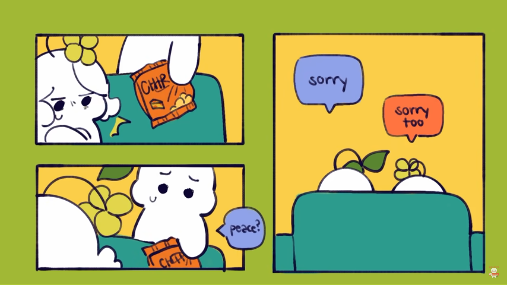
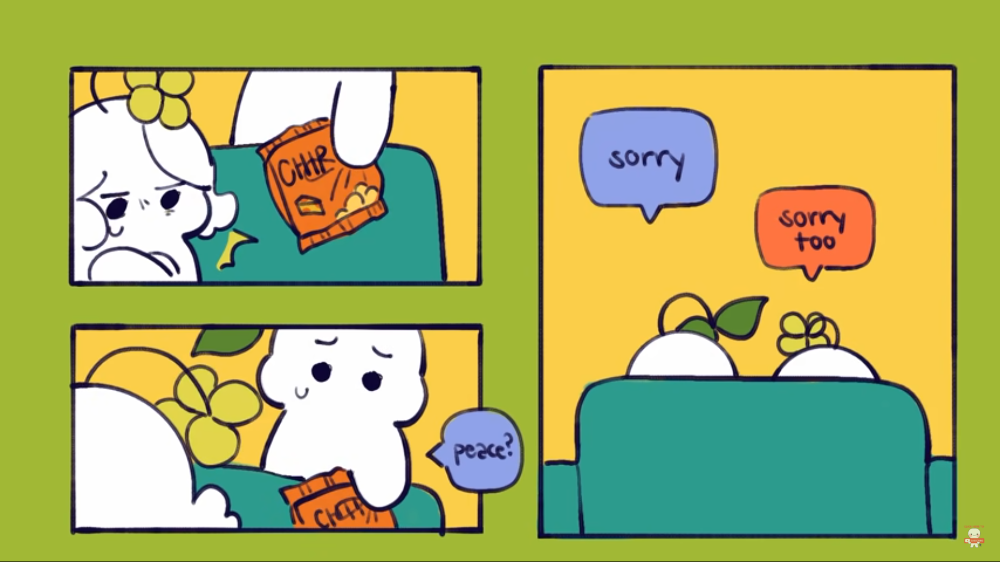

..Count on me..
if u ever find ur self stocked in the middle of the sea ,
i'll sail the world to find u
if u ever find ur self lost in the dark & u can't see,
i'll be the light to guide u
find out what we r made of ,
when we r called to help our (r) friends and needs
u can count on me
like 1 2 3 I'll be there,
and i know when i need it i can count on u
like 4 3 2,
u'll be there,
cause that what friends r supposed to do ,ooh yeahhh
ooooohooohooooh
ooooohooohooooh
<><>
U R the reason
there goes my heart beaten,... couse u r the reason
i'm losing my sleep,... please come back now
n there goes my mind racing,... n u r the reason,
that i'm still breathing,... i'm hopeless now,
i climb every mountain,... and swim every ocean,
just to be with u,... and fix what i've broken
ooh, cause i need u to see that u r the reason
there goes my hand shaking,... and u r the reason ,
my heart keeps bleeding,... i need u now,
if i could turn back the clock,... I'd make sure the light defeated the dark,
i spend every hour of every day keeping u safe,
i climb every mountain,... n swim every ocean,
just to be with u ,... n fix what i've broken
ooh,... cause i need u to see that r u the reason
i don't wanna flght nomore
i don't wanna hurt nomore
i don' wanna cry nomore
<><>
somebody shine a light
i'm frozen by the fear in me
somebody make me eel alive
and shatter me
Oh it's a long way down
But if you don't look, you don't have to know it
And I can be around
To catch your fall if you're losing your grip
Oh, and you look as beautiful as ever
And I swear that everyday you'll get better
You make me feel this way somehow
But do you love me like I love you?
Don't have to rush if you don't want to
Oh I'll be patient
But just know that there's no way
That anybody else could love you like I love you
All I need is a little love in my life
All I need is a little love in the dark
A little but I'm hoping it might kick start
Me and my broken heart
I need a little loving tonight
Hold me so I'm not falling apart
A little but I'm hoping it might kick start
Me and my broken heart
I tried, to run away but your eyes
Tell me to stay oh why
Why do we call this love
I need somebody to heal
Somebody to know
Somebody to have
Somebody to hold
It's easy to say
But it's never the same
I guess I kinda liked the way you numbed all the pain
And you're not here
To get me through it all
I was getting kinda used to being someone you loved
Before I love you (nah, nah, nah)
I'm gonna leave you (nah, nah, nah)
Before I'm someone you leave behind
I'll break your heart so you don't break mine
Before I love you (nah, nah, nah)
I'm gonna leave you (nah, nah, nah)
Even if I'm not here to stay
I still want your heart
So, before you go
Was there something I could've said to make your heart beat better?
If only I'd have known you had a storm to weather
So, before you go
Was there something I could've said to make it all stop hurting?
It kills me how your mind can make you feel so worthless
So, before you go
Our every moment, I start to replay
But all I can think about is seeing that look on your face
For as long as I live and as long as I love
I will never not think about you
You, mmm
I will never not think about you
From the moment I loved, I knew you were the one
And no matter what I-I do, ooh, mmm
I will never not think about you
i don't care , when i'm with my baby yeah
all the bad things disappear
shinny as ever
beautiful as ever and more
You're the sun to the moon
You're my ocean, painted blue
You, I'm nothing without you
(Without you, without you)
You're the light in the dark
You're the arrow through my heart
You, I'm nothing without you (oh, oh)
u don't wanna lose at love, it's only ganna hurt too much
we dream, we pray, we hope, for better days
there won't be a night, there won't be a place
where u don't cross my mind
where i don't see ur face in somebody
i hope u r thinking of me
I'll be there for u, but u gotta be there for me too
I know, u know, we know,
we weren't meant for each other and it's fine
but if the world was ending
you'd come over, right?
nothing feels better than this
"I know u love her but it's over mate,
it doesn't matter, put the phone away,
it's never easy to walk away, let her gooo,
it'll be alright"
u cut out a piece of me,
and now i bleed internally, left here,
without uuuuu
is it wrong or right, wrong or right
u r still on my mind, on my mind
tell me yyyyy yyy? , I can't say goodbyeee
no, i can't say goodbye
Yeah, we both know, in between you and me, there's an ocean,
Without you I'm just cold
Fool me once, fool me twice
Are you death or paradise?
Now you'll never see me cry
There's just no time to die
'Cause you said forever, now I drive alone past your street
i dreamt a dream of u & me
i dreamt that we were together
i climb every mountain, n swim every ocean, just to be with u , n fix what i've broken
u can count on me like 1 2 3 I'll be there,
and i know when i need it i can count on u, u'll be there,
tonight when the stars
Light up my room
I sit by myself
Talking to the moon
Tryna get to you
In hopes you're on
The other side
Talking to me too
Or am I a fool
Who sits alone
Talking to the moon
Voices always keeping me up
Telling me that I should give up
Did I say something wrong? Did you hear what I was thinking?
Did I talk way too long when I told you all my feelings that night?
Is it you? Is it me? Did you find somebody better?
Someone who isn't me, 'cause I know that I was never your type
Never really your type
Every day we started fighting
Every night we fell in love
No one else could make me sadder
But no one else could lift me high above
I don't know what I was doin'
But suddenly we fell apart
And I just wonder what it'd take to make you stay
put ur hand in mine,
u know that i want to be with u all the time,
u know that i won't stop until i make u mine,
u know that i won't stop until i make u mine,
until i make u mine.
...
put ur hand in mine,
u know that i want to be with u all the time,
oh darling, darling baby, u r so very fine,
u know that i wo'n't stop until i make u mine
until i make uuuuu......
always,let that beautiful face shine with ur great smile, please
If you've lost your way
I will leave the light on
I will leave the light on
Baby, you light up my world like nobody else
Home is wherever I'm with you
i guess i'm tired of falling in love
i can't carry this anymore
So I'm never gonna get too close to you
Even when I mean the most to you
Livin' your best life
Lovin' the wrong guy
You used to be mine
But I let you go
And that's the part that hurts me the most
darling, I hope
That you'll be here, when I need you the most
But we both know this ships sinking slowly
Don't wanna see you, wanna kiss you, wanna love you
But I don't wanna say bye don't wanna say bye
I don't wanna watch the tears run down your face
know, I hurt you, and I, I'm sorry
All I wanted was to love somebody
i've been trying not to think about you but....
i can't..
Oh oh I know it hurts 'cause I feel it too
But after all, all that we been through, yeah
Ooh why do we, we have to be
Enemies, enemies?
Tattoos together, something to remember
If it's way too soon, fuck it, whatever
Give me shapes and letters, if it's not forever
Then at least we'll have tattoos together
Mm, 'cause I love you
Mm, 'cause I love you
Mm, 'cause I love you
Mm (oh)
But they don't understand
You're all I had
You're all I had
I know you're somewhere out there
Somewhere far away
I can make ya laugh 'til you cry
But she can make your tears dry, and
When you get your heart broke by the wrong guy
She can make it right
I'm so in love with you
And I hope you know
Darling, your love is more than worth its weight in gold
I'm coming to terms with a broken heart
I guess that sometimes good things fall apart
" i just hope u don't miss that part of me"
i don't care , what they doooo
i just wanna .. be with uuu
and i don't mind .. all the time ..
we will fight ... just to get through
................
u got that hometwon smile...
u got that look in ur eyes..
that says oh everything will one day be alright..
the world is not perfect, but it's not that bad
if we have each other , and that's all we have
i'll be ur lover and i'll hold ur hand
u should know i'll be there for u
u should know i'll be there for u
I wanna be king in your story
I wanna know who you are
I want your heart to beat for me
When I feel like nothing's gonna hold me down
Hold me down, you do
Used to be scared of falling, 'til you came around
Came around
All we need is a little time
To keep me yours and keep you mine
I used to believe
We were burnin' on the edge of somethin' beautiful
Don't you give up, nah, nah, nah
I won't give up, nah, nah, nah
Let me love you
Don't you ever say I just walked away
I will always want you
It's a thin line between all this love and hate
And if you switch sides, you're gon' have to claim your place
Hate me, hate me, tell me how you hate me
Tell me how I'm trash and you could easily replace me
'Cause I don't care, as long as you just hold me near
You can take me anywhere
And you're making me feel like I'm loved by somebody
You give me kind of love that I never had
Wish that I could love, love, love you back
I don't wanna be sad forever
I don't wanna be sad no more
I don't wanna wake up and wonder
What the hell am I doing this for?
And I know my life is better, Because you're a part of it, I know without you by my side
That I would be different
Thank you for all of your trust
Thank you for not giving up
if u ever find ur self stocked in the middle of the sea , i'll sail the world to find u
if u ever find ur self lost in the dark & u can't see, i'll be the light to guide u
Can't help but feel like something's wrong, yeah
'Cause the place I'm livin' in just doesn't feel like home
Simple as can be
I got your hands in mine
And you don't have to listen carefully
I'll tell you a thousand times
Anything you feel, put it all on me
All of your thoughts, I want everything
And when you get sad, like you do sometimes
Put it all on me
Put it all on me
I'll lift you when you're feeling low
I'll hold you when the night gets cold
You'll never have to be alone
And that's all you need to know
No love lost, we've got you and I
No clouds, we shoot them out the sky
You'll never have to be alone
And that's all you need to know
And that's all you need to know
And that's all you need to know
And if the sun starts setting, the sky goes cold
Then if the clouds get heavy and start to fall
I really need somebody to call my own
I wanna be somebody to someone
I just wanna talk about nothin'
With somebody that means somethin'
Spell the names of all our dreams and demons
For the times that I don't understand
Tell me what's the point of a moon like this
When I'm alone again
Can I run away to somewhere beautiful
Where nobody knows my name?
 
